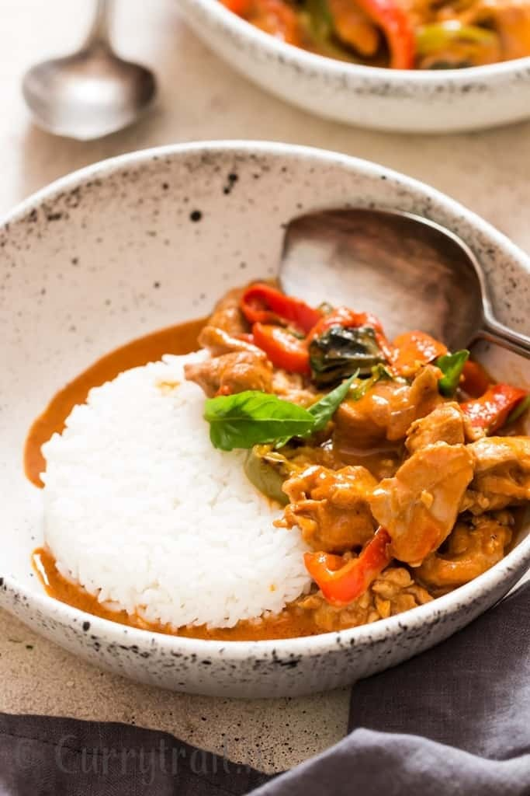

Chicken Panang Curry

Description
Traditionally Panang curry paste is made from scratch using a huge pestle and mortar. Nothing comes closer to fresh
homemade curry paste from scratch. Yes, it takes time to prepare the curry paste (get ready for sore arms). Or
conveniently add everything into food processor and blend into coarse paste. Choice is yours. Panang curry paste is
traditionally made from chili peppers (bits eye chilies), galangal, lemongrass, kaffir lime, coriander root, coriander
seeds, cumin seeds, garlic, shallot, shrimp paste, salt and peanuts. Grind everything in mortar pestle and your curry
paste is ready and if finding all the ingredients is a challenge, use store bought panang curry paste( we did that).
Ingredients
- 1 ½ lbs chicken thigh boneless, cut into bite size pieces
- 1 white onion finely chopped
- 5 cloves garlic minced
- 1 green bell peppers chopped
- 1 red bell peppers chopped
- ½ inch galangal roughly sliced
- 1 inch lemongrass roughly sliced
- 1 tablespoon coconut oil
- 1 small jar Thai Panang curry paste measured to about 4 ½ tablespoons
- 1 tablespoon unsweetened peanut butter
- 2 teaspoon fish sauce
- 1 pinch nutmeg powder optional
- Salt to taste if required
- 2 teaspoon palm sugar or brown sugar
- 6-8 kaffir lime leave crushed
- 1 can (14 oz) coconut milk
- ¼ cup Thai basil leaves
Cooking Steps
- Heat skillet or deep bottom pan. Add coconut oil and wait until oil melts.
- Sauté finely chopped onions in hot coconut oil until onion is translucent.
- Add roughly chopped galangal, lemon grass.
- Add minced garlic, red and green bell peppers. Cook for 2 minutes constantly stirring.
- Push veggies to one side of the pan. Add washed and cleaned chicken things. Cook until chicken browns a bit and changes colour.
- Mix chicken and veggies together. Continue cooking it for a minute more.
- Again gather chicken veggie mix to one side of the pan. Scoop out Thai Panang curry paste ( or Thai red curry paste) to empty
side of pan. Stir the paste and fry it in oil. Wait until oil separates from the paste.
Pro-Tip : Do not skip frying curry paste in oil. Flavors cone out and curry turns delicious with this step.
- Stir in unsweetened peanut butter, fish sauce and palm sugar. Nutmeg powder to be added now if using.
Take Kaffir lime leaves on your palm and crush it. Add crushed kaffir lime leaves to the pan.
- Cook stirring regularly for 2 minutes.
- Simmer flame. Pour in thick coconut milk. Give it a good stir.
- Let it cook for 5-7 minutes or until chicken is fully cooked.
- Add few Thai basil leaves. Stir.
- Turn off flame. Thai Chicken Panang Curry is ready.
- It’s great when served with steamed jasmine rice.
- You can also serve Thai Panang curry with rice noodles.